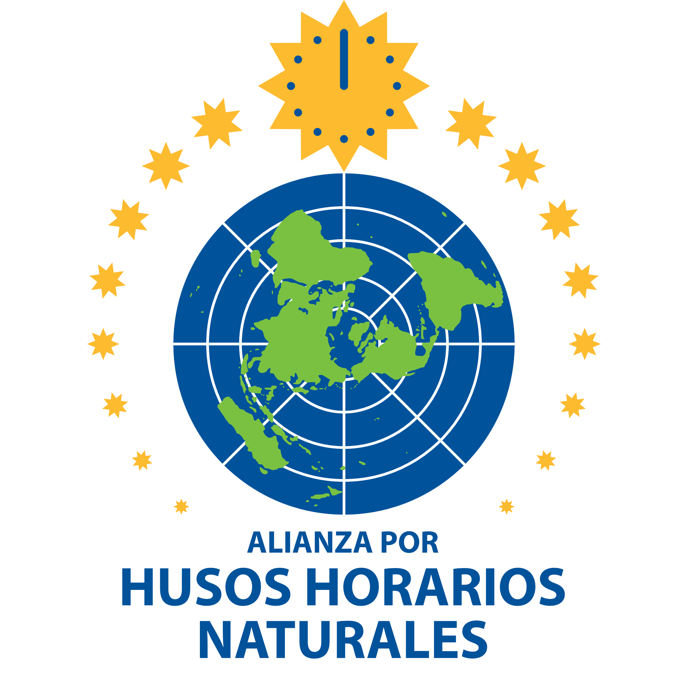

Abogar por la observación permanente de las husos horarios naturales de todo el mundo.
Los husos horarios naturales (tiempo estandarizado, apropiado a la longitud) mejoran la salud, la seguridad, la escolaridad, la productividad, los salarios, el medio ambiente y las libertades civiles.
¡Visite nuestros grupos de miembros y únase al movimiento por relojes saludables y justos!
Abolir el Cambio de Hora
Alemania 🇩🇪
zeitumstellung-abschaffen.de
Asociación Contra el Doble Horario de Verano
Francia 🇫🇷
heure-ete.net
Asociación para el Retorno a la Hora Meridiana
Francia 🇫🇷
lameridienne.over-blog.org
Iniciativa de Tiempo Solar
Alemania 🇩🇪
initiative-sonnenzeit.de
Iniciativa de Uso del Tiempo de Barcelona
España 🇪🇸
timeuse.barcelona
MejoresTiempos
Alemania 🇩🇪
gobettertimes.org
Plataforma Mejores Tiempos
Países Bajos 🇳🇱
beteretijden.org
Salva Tiempo Estándar
Estados Unidos 🇺🇸
savestandardtime.com
Saratov por un Tiempo Saludable
Rusia 🇷🇺
facebook.com
Sociedad Alemana para la Política del Tiempo
Alemania 🇩🇪
zeitpolitik.de
Sociedad B
Dinamarca 🇩🇰
b-society.org